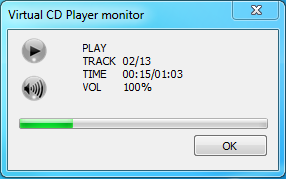

NOTE: The CD Player is active only when a game that has cd music is running and using the "Virtual CD audio" feature. It is useful for monitoring the music playback.
Status icon: shows the player status, either STOP, PLAY or PAUSE. No icon means the player is not active.
Volume icon: shows the volume level, in percentage range 0 (mute), 1-20, 21-40, 41-60, 61-80, 81-100 (full volume)
Progress bar: shows the playing progress of the current track wnen the player is either in status play or pause
TRACK: current audio track / total numbr of tracks (including data tracks)
TIME: played time of current audio track / total length of current audio track (time expressed in MM:SS format)
VOL: volume percentage in range 0% (mute) - 100% (full volume)